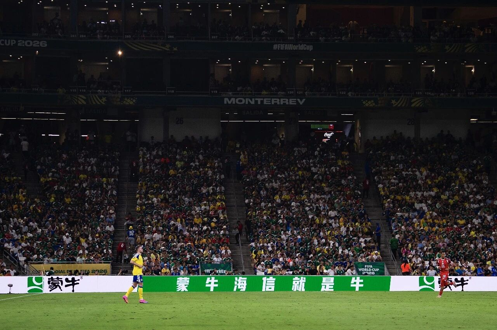
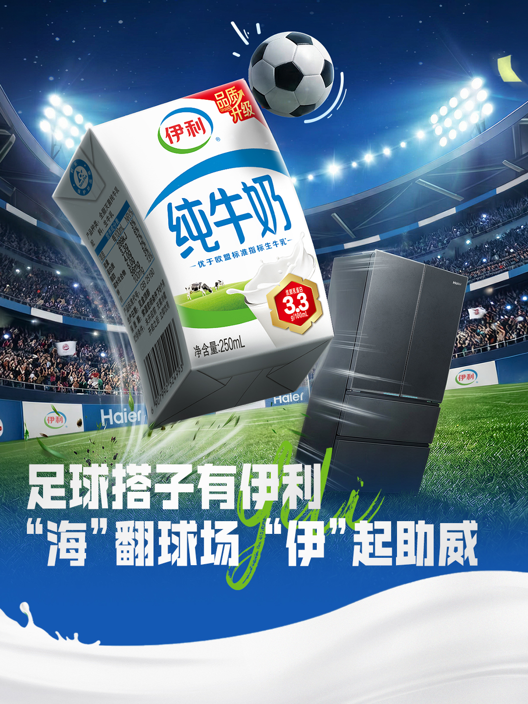
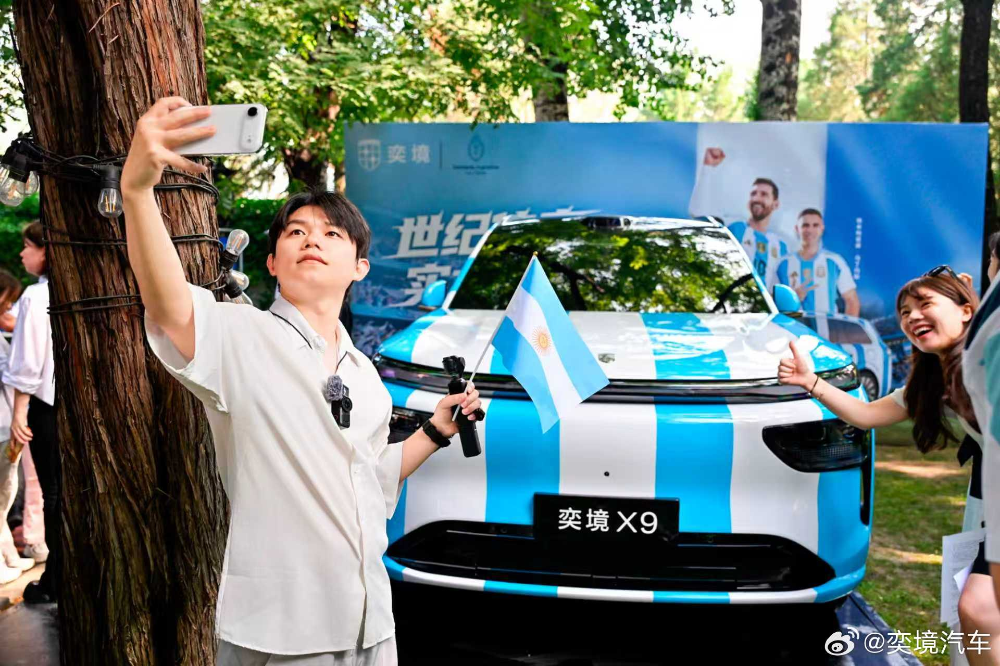
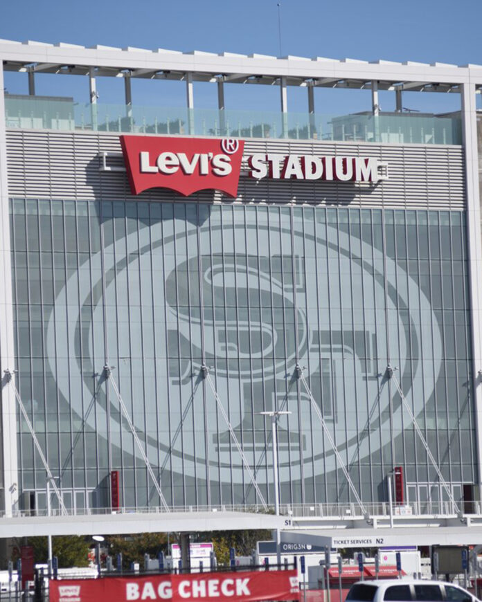
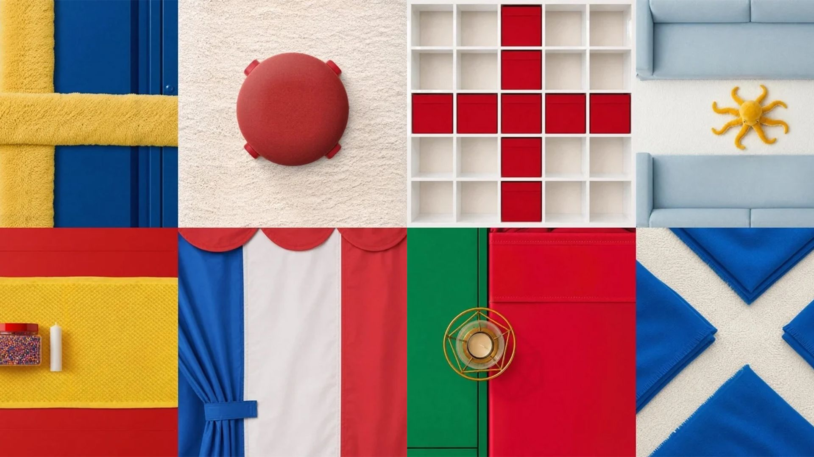
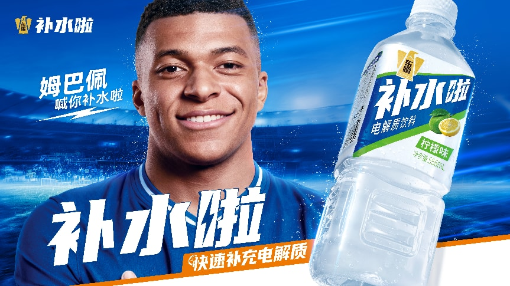

GLOBAL SEARCH · 全站搜索234 个案例 · 18 篇文章 · 154 个品牌入口
SPORTS MARKETING CASE OBSERVATION
体育营销案例观察
仅供内部访问从 2026 美加墨世界杯启动，持续把大型赛事与日常体育场景中的营销动作拆成可检索、可核验、可迁移的案例。每个案例优先归档权利方、球队、品牌和持权媒体的官方页面、完整视频与真实执行素材。
FLAGSHIP CATEGORY 01
世界杯营销
把 201 个持续新增的 2026 当届案例与 32 个历届经典方法归入同一世界杯专题。事实档案回答“发生了什么”，经典方法回答“为什么值得长期复用”。
2026 当届 201历届经典 32中国品牌专题六层赞助矩阵
ONGOING CATEGORY 02
日常体育营销
从联赛、球队、场馆、运动员、社区、零售与体育生活方式中持续归档，不等下一届大赛才开始研究。
当前 1 案官方素材优先持续更新
READING CATEGORY 03
深度文章
归档微信公众号与体育营销专业媒体的经典分析，只做摘要导读和议题标签，并回链媒体原文或已标注的公开转载页。
首批 18 篇5 家专业媒体原文回链
DAILY SPORTS · CASE 001
日常体育营销，从一个全场共同完成的动作开始
DAILY CASE 001 · 棒球 / MLB
QuikTrip × 圣路易斯红雀：巨型热狗全场接力
让观众把巨型充气热狗和面包在人群上方接力传递；两者会合，全场获得免费热狗。
官方素材已核美国 · 圣路易斯场内体验设计 / 集体任务 / 全场奖励
WORLD CUP FLAGSHIP · 10 FEATURED CASES
世界杯当届代表案例

CASE 005
蒙牛：《冠军的秘密》
资源溢出与“放下冠军”的赛后收束
已核验中国品牌全球官方与产品化

CASE 007
蒙牛 × 海信：“山蒙海誓”围挡共创
把单品牌围挡改写为中国品牌共同叙事
已核验中国品牌全球官方与产品化

CASE 095
伊利 x 京东：观赛搭子 CP
不卖单一赞助，把观赛需求拆成可搭配购买的组合
已核验中国品牌中国企业参与
全球创意与非官方突围
CASE 021
挪威航空 x 英航：换头像赌约
轻赌注、快兑现和围观式传播
部分核验全球案例全球创意与非官方突围

CASE 126
奕境汽车 × 阿根廷队：「进一球送 X9」
把每次进球变成车辆使用权福利的重复触发点，并让球队情绪承接新品上市节奏
部分核验中国品牌中国企业参与
中国企业参与
CASE 102
联想：「世界杯预测人机大战」
让 DeepSeek、Kimi、文心一言、通义千问等模型成为可追更的赛程角色
部分核验中国品牌中国企业参与

CASE 020
Levi’s：被遮住的名字，藏不住的经典
把世界杯期间必须遮挡的场馆冠名，转成 Batwing 轮廓识别与“经典藏不住”的文化叙事
已核验全球案例全球创意与非官方突围

CASE 084
IKEA Canada：Assemble the World
把家居产品变成竞猜国旗，让品牌语言天然进入赛事
已核验全球案例全球创意与非官方突围
中国企业参与
CASE 098
钉钉：会议踢皮球杯赛
借足球动作解释办公室协作摩擦，把赛事梗翻译成产品问题
已核验中国品牌中国企业参与

CASE 035
东鹏补水啦 × 姆巴佩：从速度代言到“补水时刻”
先用姆巴佩的速度资产建立功能信任，再借转播中的补水节点占据品类场景
已核验中国品牌中国企业参与
WORLD CUP CLASSIC METHODS
32 个经典方法案例已并入世界杯分类
历届 30 案、华帝“法国队夺冠退全款”和 2026“山蒙海誓”都作为世界杯专题的经典方法层保留，不再与世界杯营销并列为网站顶层频道。
查看世界杯经典方法 →